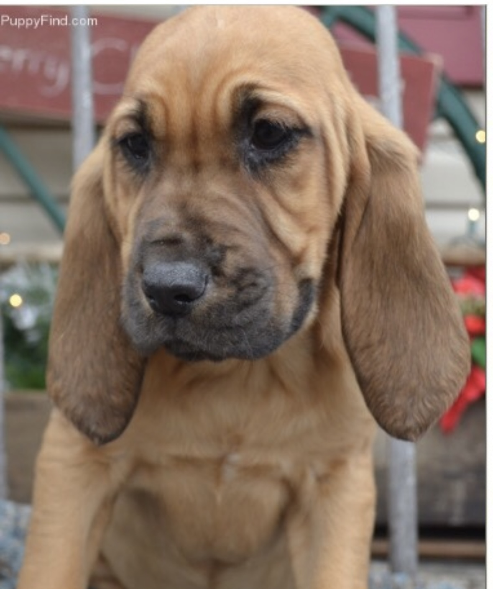
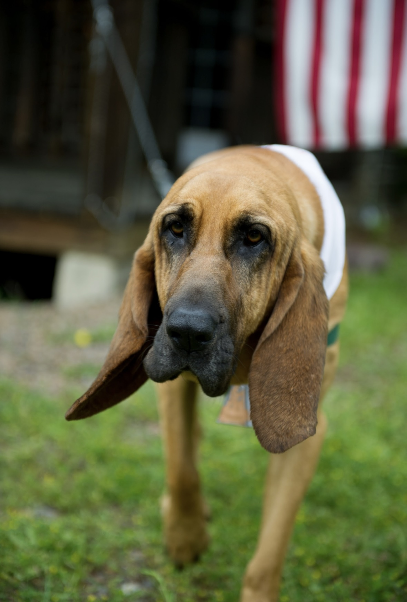

.png)
This is a website about the best dog to ever exist, Darcy.
Darcy is an eight year old purebred Bloodhound. She will turn nine at the end of October. Her favorite activities include swimming, eating, sleeping, and playing with her sisters, Darlene and Jolene. Darcy was born in Missouri but has spent most of her life in both Colorado and Montana. Her skills include tracking, running, sitting when told, and cleaning dishes. She is usually pretty well behaved and a very sweet girl.
Bloodhounds are a large scent hound, originally bred for hunting deer, wild boar, rabbits, and since the Middle Ages, for tracking people. Believed to be descended from hounds once kept at the Abbey of Saint-Hubert, Belgium, in French it is called, le chien de Saint-Hubert. This breed is famed for its ability to discern human scent over great distances, even days later. Its extraordinarily keen sense of smell is combined with a strong and tenacious tracking instinct, producing the ideal scent hound, and it is used by police and law enforcement all over the world to track people, pets, and even fugitives.